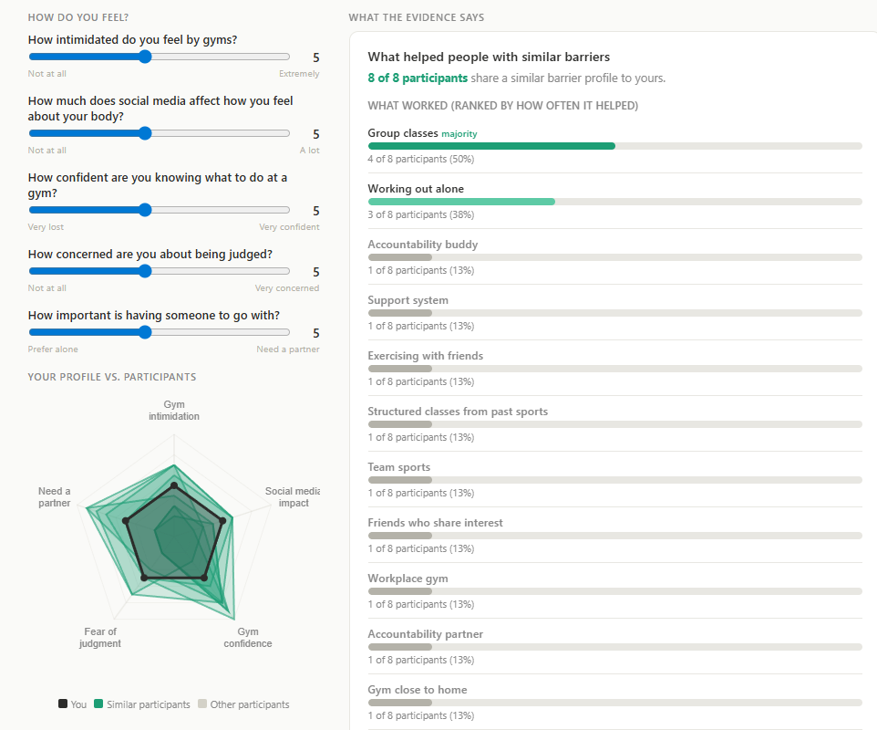
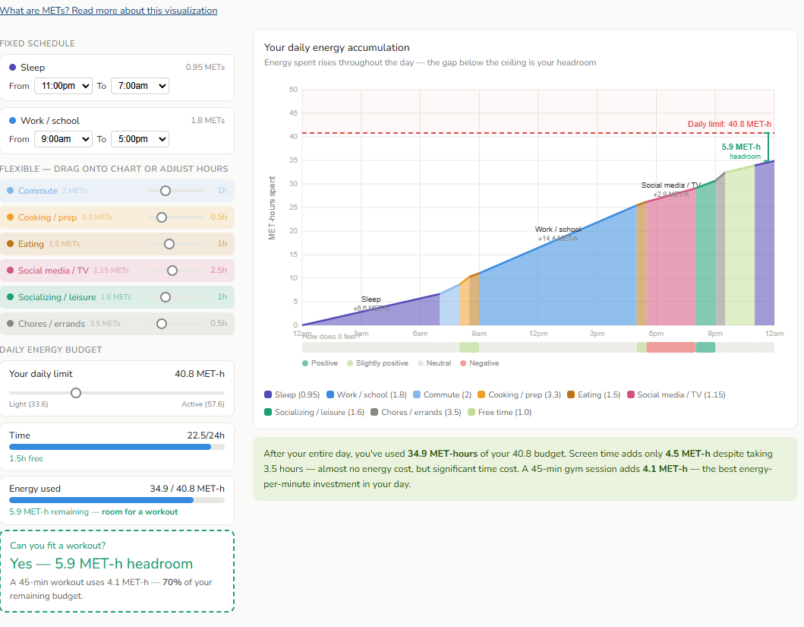
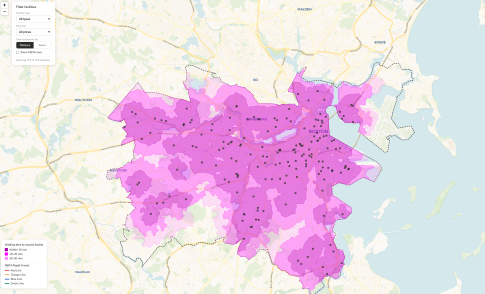

Boston’s fitness culture is among the most active in the country. The city is highly walkable and offers abundant outdoor spaces such as parks, trails, and public tracks that make it easy to stay active beyond the gym. Additionally, with roughly 21 gyms per 100,000 residents, Boston ranks as one of the nation’s densest major metropolitan areas for fitness facilities. Yet despite this, a large portion of the population still feels that fitness isn’t accessible. What barriers are keeping people from stepping into the gym and staying active?
To better understand the challenges that make individuals hesitant to participate in physical activity, we conducted both background research and interviews with residents living in the Boston area. These conversations explored how people feel about exercise, how they spend their free time, and the mental hurdles that influence their willingness to be active.
Across both research and interviews, the most common obstacles included a lack of time, limited mental capacity, and difficulty accessing gyms. Additionally, many participants described how social media influences their self‑perception, often reinforcing body image concerns and contributing to gym intimidation. While these factors were not the primary reasons people avoided exercise, they strongly shaped how participants talked about their bodies and their relationship with fitness.
To help individuals navigate these barriers, we created three visualizations designed to illustrate how accessible fitness can be and to support residents in identifying realistic ways to incorporate physical activity into their routines.